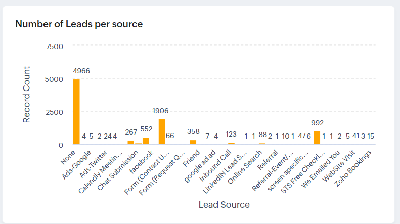
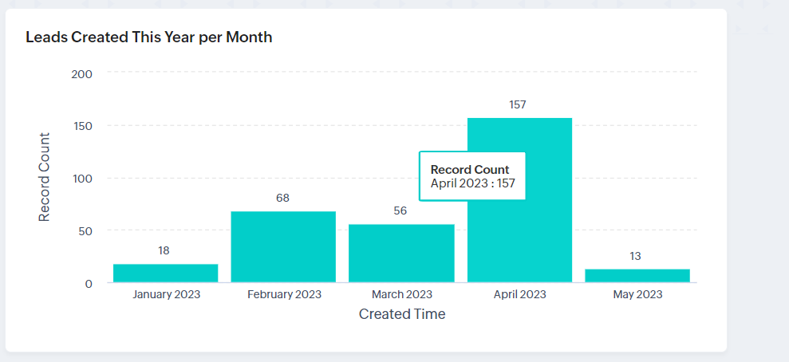
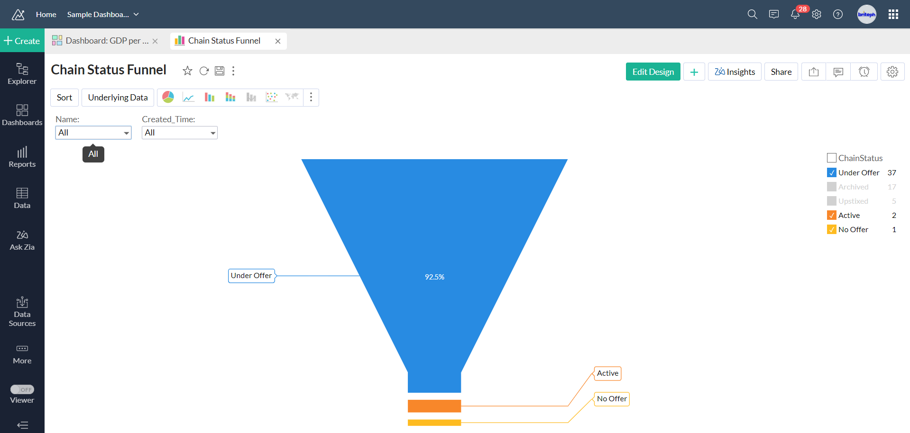
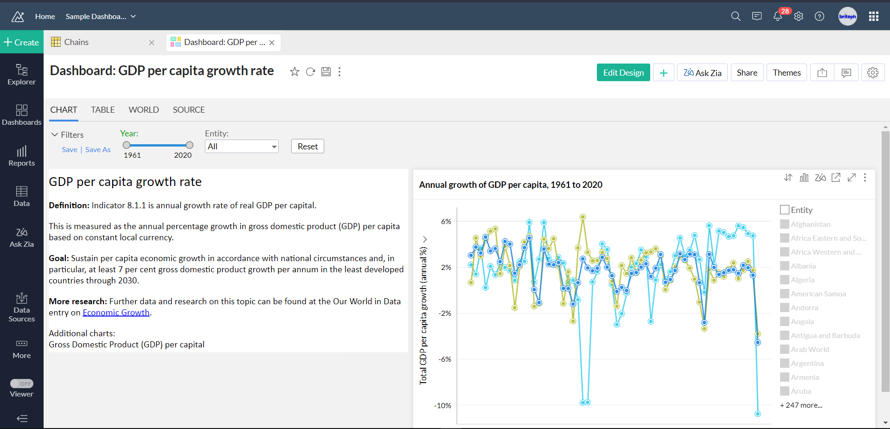

BritePH / Data visualization
BritePH / Data visualization
Zoho Analytics reporting
Funnels, trends, and source comparisons offer different views into records and activity.
- Organization
- BritePH
- Focus
- Data visualization
- Shown here
- Charts & sample dashboards
The problem
Raw records can hide patterns in pipeline status, lead sources, and activity over time.
The approach
The reporting collection combines funnel, line, and column charts with record-level tables to address different review questions.
Workflow details
- Inspect a status funnel and a separate GDP growth time-series example.
- Compare lead counts and sales won by source.
- Review monthly lead creation and investigate the underlying records.
Intended value
The views support data exploration and can reveal quality questions, such as the large “None” category in the lead-source chart.
Reporting examples
Select a screenshot to enlarge it.
{kind=link}

Enlarge screenshot{kind=link}

Enlarge screenshot{kind=link}

Enlarge screenshot{kind=link}

Enlarge screenshotProject scope & source
Reporting snapshots. Some views use sample workspaces, and the GDP dashboard is a separate example. Displayed chart values are not project-generated business gains; source definitions, refresh timing, and completeness are unverified.
Source: RG and BritePH Project Case Studies Revised. Project-specific delivery dates and individual responsibilities are not specified in the source.
Planning a similar project?
Discuss a project